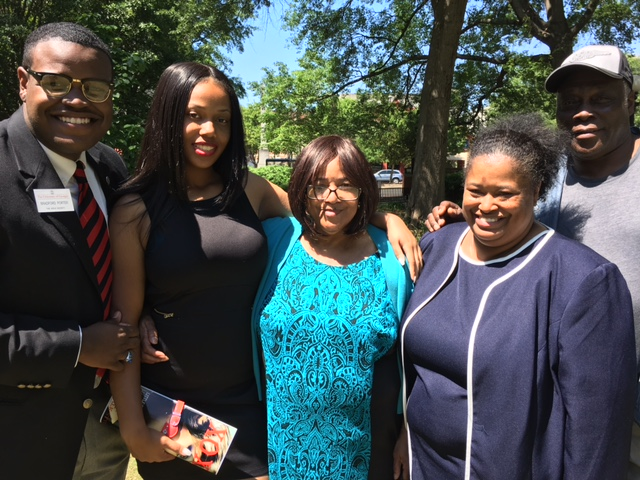
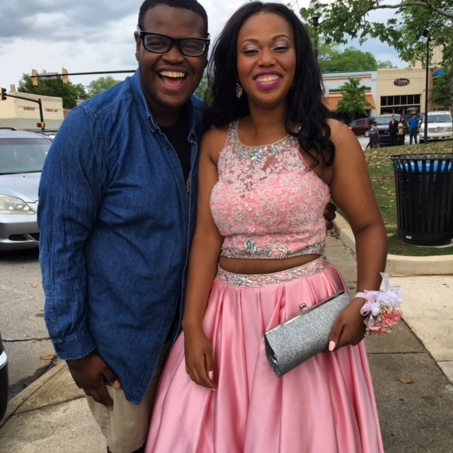
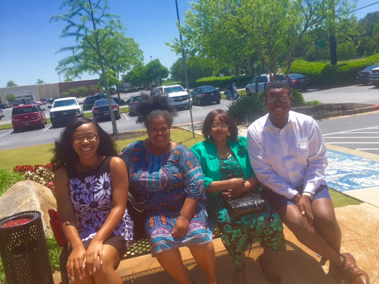

I was born and raised in Covington,GA. I lived on the same street since I was three year old. I lived with my mom, dad, younger sister, and grandmother (my mom's mother). My father is a mechanic and has a true love for cars. A few facts about Covington is that it was saved during Sherman's march to the sea, and is the city where Georgia 4-h was founded in 1901. Growing I was not a big fan of Covington, I felt it was not a diverse town and was too in touch to its southern rooots. I remember it wasn't until third grade when there was more two black kids in my class. By this time more people from Atlanta began movinginto the town sicne we are only an hour for Atlanta. Even with that, the numbers were still small and it wasn't until middle school where the town started to get more diverse. Once I started getting involoved in clubs, I started to travel the state and learn how Covington was not that bad. I began to appreciate the town, becuase as long as my family is happy and safe I feel that is what really matters.
  These are just a few pictures that come to mind when I think of my hometown. When I think of Covington, I think of memories full of my house, my family, my friends, my achiviements, and ultatimately I think of home. Covington is not perfect with tthings like discrimination, racism, and prejudice in the town. But I am grateful, for my family for raising to know there is more to the world than the 30014( our area code). They taught me to work hard, and allowed me to have dreams like graudating high school, being involved in my town and community, and going to UGA. I can say that some of my dreams have turned into realities and this is only the beginning.